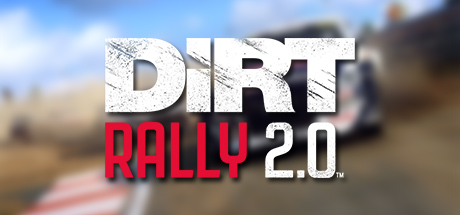

Edit the file located at:
Documents\My Games\DiRT Rally 2.0\hardwaresettings\hardware_settings_config.xml
( The documents folder is in your windows user folder, usually looks like this "C:\Users\yourname\Documents" )
Copy paste the following sections in the "motion_platform" section
<motion_platform>
<dbox enabled="true" />
<udp enabled="true" extradata="3" ip="127.0.0.1" port="20777" delay="1" />
<custom_udp enabled="false" filename="packet_data.xml" ip="127.0.0.1" port="20777" delay="1" />
<fanatec enabled="true" pedalVibrationScale="1.0" wheelVibrationScale="1.0" ledTrueForGearsFalseForSpeed="true" />
</motion_platform>
Save the modifications.